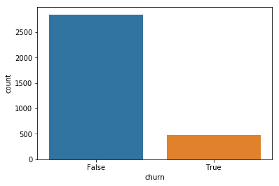
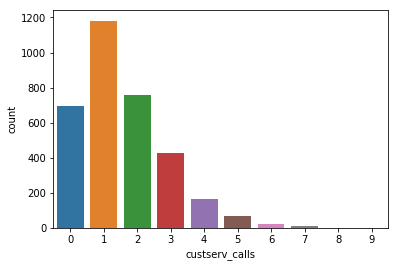
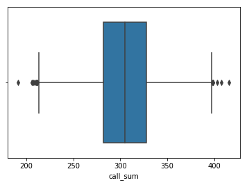
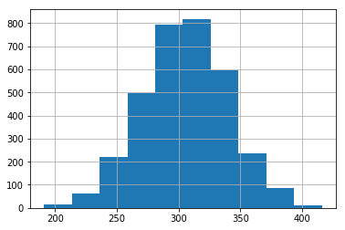
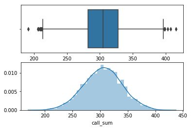

Review¶
- Examine data on customer churn
- Review
groupbyand basic plots
Use the data below, from a telecommunications company, to examine the
groups in the churn column. This is a TRUE or FALSE column,
representing whether or not a company had retained the customer. To
start, we perform our usual exploration.
In [165]:
import pandas as pd
In [166]:
df = pd.read_csv('data/cell_phone_churn.csv')
In [167]:
df.head()
Out[167]:
| state | account_length | area_code | intl_plan | vmail_plan | vmail_message | day_mins | day_calls | day_charge | eve_mins | eve_calls | eve_charge | night_mins | night_calls | night_charge | intl_mins | intl_calls | intl_charge | custserv_calls | churn | |
|---|---|---|---|---|---|---|---|---|---|---|---|---|---|---|---|---|---|---|---|---|
| 0 | KS | 128 | 415 | no | yes | 25 | 265.1 | 110 | 45.07 | 197.4 | 99 | 16.78 | 244.7 | 91 | 11.01 | 10.0 | 3 | 2.70 | 1 | False |
| 1 | OH | 107 | 415 | no | yes | 26 | 161.6 | 123 | 27.47 | 195.5 | 103 | 16.62 | 254.4 | 103 | 11.45 | 13.7 | 3 | 3.70 | 1 | False |
| 2 | NJ | 137 | 415 | no | no | 0 | 243.4 | 114 | 41.38 | 121.2 | 110 | 10.30 | 162.6 | 104 | 7.32 | 12.2 | 5 | 3.29 | 0 | False |
| 3 | OH | 84 | 408 | yes | no | 0 | 299.4 | 71 | 50.90 | 61.9 | 88 | 5.26 | 196.9 | 89 | 8.86 | 6.6 | 7 | 1.78 | 2 | False |
| 4 | OK | 75 | 415 | yes | no | 0 | 166.7 | 113 | 28.34 | 148.3 | 122 | 12.61 | 186.9 | 121 | 8.41 | 10.1 | 3 | 2.73 | 3 | False |
In [168]:
df.info()
<class 'pandas.core.frame.DataFrame'>
RangeIndex: 3333 entries, 0 to 3332
Data columns (total 20 columns):
state 3333 non-null object
account_length 3333 non-null int64
area_code 3333 non-null int64
intl_plan 3333 non-null object
vmail_plan 3333 non-null object
vmail_message 3333 non-null int64
day_mins 3333 non-null float64
day_calls 3333 non-null int64
day_charge 3333 non-null float64
eve_mins 3333 non-null float64
eve_calls 3333 non-null int64
eve_charge 3333 non-null float64
night_mins 3333 non-null float64
night_calls 3333 non-null int64
night_charge 3333 non-null float64
intl_mins 3333 non-null float64
intl_calls 3333 non-null int64
intl_charge 3333 non-null float64
custserv_calls 3333 non-null int64
churn 3333 non-null bool
dtypes: bool(1), float64(8), int64(8), object(3)
memory usage: 498.1+ KB
Now, we can summarise the quantitative variables.
In [62]:
df.describe()
Out[62]:
| account_length | area_code | vmail_message | day_mins | day_calls | day_charge | eve_mins | eve_calls | eve_charge | night_mins | night_calls | night_charge | intl_mins | intl_calls | intl_charge | custserv_calls | call_sum | |
|---|---|---|---|---|---|---|---|---|---|---|---|---|---|---|---|---|---|
| count | 3333.000000 | 3333.000000 | 3333.000000 | 3333.000000 | 3333.000000 | 3333.000000 | 3333.000000 | 3333.000000 | 3333.000000 | 3333.000000 | 3333.000000 | 3333.000000 | 3333.000000 | 3333.000000 | 3333.000000 | 3333.000000 | 3333.000000 |
| mean | 101.064806 | 437.182418 | 8.099010 | 179.775098 | 100.435644 | 30.562307 | 200.980348 | 100.114311 | 17.083540 | 200.872037 | 100.107711 | 9.039325 | 10.237294 | 4.479448 | 2.764581 | 1.562856 | 305.137114 |
| std | 39.822106 | 42.371290 | 13.688365 | 54.467389 | 20.069084 | 9.259435 | 50.713844 | 19.922625 | 4.310668 | 50.573847 | 19.568609 | 2.275873 | 2.791840 | 2.461214 | 0.753773 | 1.315491 | 34.448164 |
| min | 1.000000 | 408.000000 | 0.000000 | 0.000000 | 0.000000 | 0.000000 | 0.000000 | 0.000000 | 0.000000 | 23.200000 | 33.000000 | 1.040000 | 0.000000 | 0.000000 | 0.000000 | 0.000000 | 191.000000 |
| 25% | 74.000000 | 408.000000 | 0.000000 | 143.700000 | 87.000000 | 24.430000 | 166.600000 | 87.000000 | 14.160000 | 167.000000 | 87.000000 | 7.520000 | 8.500000 | 3.000000 | 2.300000 | 1.000000 | 282.000000 |
| 50% | 101.000000 | 415.000000 | 0.000000 | 179.400000 | 101.000000 | 30.500000 | 201.400000 | 100.000000 | 17.120000 | 201.200000 | 100.000000 | 9.050000 | 10.300000 | 4.000000 | 2.780000 | 1.000000 | 305.000000 |
| 75% | 127.000000 | 510.000000 | 20.000000 | 216.400000 | 114.000000 | 36.790000 | 235.300000 | 114.000000 | 20.000000 | 235.300000 | 113.000000 | 10.590000 | 12.100000 | 6.000000 | 3.270000 | 2.000000 | 328.000000 |
| max | 243.000000 | 510.000000 | 51.000000 | 350.800000 | 165.000000 | 59.640000 | 363.700000 | 170.000000 | 30.910000 | 395.000000 | 175.000000 | 17.770000 | 20.000000 | 20.000000 | 5.400000 | 9.000000 | 416.000000 |
countplot¶
Seaborn’s countplot is quite handy here. We can examine both the number churned and the the counts for customer service call. Any discrete/finite count variable can be used here.
In [63]:
import seaborn as sns
In [169]:
sns.countplot(df.churn)
Out[169]:
<matplotlib.axes._subplots.AxesSubplot at 0x120ddf198>

In [171]:
df.churn.mean()
Out[171]:
0.14491449144914492
In [176]:
sns.countplot(df.custserv_calls)
Out[176]:
<matplotlib.axes._subplots.AxesSubplot at 0x1045a8c88>

In [177]:
df[df['custserv_calls'] == 9]
Out[177]:
| state | account_length | area_code | intl_plan | vmail_plan | vmail_message | day_mins | day_calls | day_charge | eve_mins | eve_calls | eve_charge | night_mins | night_calls | night_charge | intl_mins | intl_calls | intl_charge | custserv_calls | churn | |
|---|---|---|---|---|---|---|---|---|---|---|---|---|---|---|---|---|---|---|---|---|
| 542 | MN | 152 | 415 | yes | yes | 20 | 237.5 | 120 | 40.38 | 253.4 | 94 | 21.54 | 265.2 | 80 | 11.93 | 14.2 | 3 | 3.83 | 9 | True |
| 2380 | NJ | 53 | 408 | no | no | 0 | 228.6 | 117 | 38.86 | 132.8 | 123 | 11.29 | 227.2 | 124 | 10.22 | 10.1 | 2 | 2.73 | 9 | True |
In [179]:
df[df['custserv_calls'] >= 5]['churn'].mean()
Out[179]:
0.6138613861386139
In [180]:
df[df['custserv_calls'] < 5]['churn'].mean()
Out[180]:
0.13025990099009901
groupby¶
To look at relationships in chunks, we use our .groupby method.
First, we can see how many people were churned within the international
plan categories.
In [172]:
df.groupby(['intl_plan', 'churn'])['churn'].count()
Out[172]:
intl_plan churn
no False 2664
True 346
yes False 186
True 137
Name: churn, dtype: int64
In [10]:
df.churn.sum()
Out[10]:
483
In [11]:
df.shape
Out[11]:
(3333, 20)
In [90]:
df.groupby(['state', 'custserv_calls'])['churn'].count().head()
Out[90]:
state custserv_calls
AK 0 11
1 18
2 10
3 10
4 2
Name: churn, dtype: int64
In [91]:
df['call_sum'] = df.day_calls + df.eve_calls + df.night_calls + df.intl_calls
In [92]:
df['call_sum'].describe()
Out[92]:
count 3333.000000
mean 305.137114
std 34.448164
min 191.000000
25% 282.000000
50% 305.000000
75% 328.000000
max 416.000000
Name: call_sum, dtype: float64
In [93]:
sns.boxplot(df.call_sum)
Out[93]:
<matplotlib.axes._subplots.AxesSubplot at 0x12021f8d0>

In [94]:
df.call_sum.hist()
Out[94]:
<matplotlib.axes._subplots.AxesSubplot at 0x120134908>

In [96]:
%matplotlib inline
import matplotlib.pyplot as plt
In [102]:
plt.subplot(2, 1, 1)
sns.boxplot(df.call_sum)
plt.subplot(2, 1, 2)
sns.distplot(df.call_sum)
Out[102]:
<matplotlib.axes._subplots.AxesSubplot at 0x120b32f98>

Webscraping Intro¶
In [181]:
%%HTML
<h1>Heading</h1>
<p>This is a paragraph <strong>word!!</strong> </p>
Heading
This is a paragraph word!!
In [104]:
url = 'https://www.yelp.com/search?find_desc=Falafel&find_loc=Upper+East+Side%2C+Manhattan%2C+NY&ns=1'
In [105]:
from bs4 import BeautifulSoup
import requests
In [106]:
response = requests.get(url)
In [107]:
response
Out[107]:
<Response [200]>
In [108]:
response.text[:100]
Out[108]:
'<!DOCTYPE HTML>\n\n<!--[if lt IE 7 ]> <html xmlns:fb="http://www.facebook.com/2008/fbml" class="ie6 ie'
In [109]:
soup = BeautifulSoup(response.text, 'html.parser')
In [110]:
soup.find('span')
Out[110]:
<span class="pseudo-input_text">Find</span>
In [111]:
soup.find_all('span')[:10]
Out[111]:
[<span class="pseudo-input_text">Find</span>,
<span class="pseudo-input_field-holder">
<input aria-autocomplete="list" autocomplete="off" class="main-search_field pseudo-input_field" id="find_desc" maxlength="64" name="find_desc" placeholder="tacos, cheap dinner, Max’s" tabindex="1" value="Falafel">
</input></span>,
<span class="pseudo-input_text">Near</span>,
<span class="main-search_field-holder pseudo-input_field-holder">
<input aria-autocomplete="list" autocomplete="off" class="main-search_field pseudo-input_field" data-query="Upper East Side, Manhattan, NY" id="dropperText_Mast" maxlength="80" name="find_loc" placeholder="address, neighborhood, city, state or zip" tabindex="2" value="Upper East Side, Manhattan, NY">
<input name="ns" type="hidden" value="1">
</input></input></span>,
<span class="main-search_action-icon-wrap js-search-icon-wrap">
<span aria-hidden="true" class="icon icon--24-search icon--size-24 icon--inverse icon--fallback-inverted" style="width: 24px; height: 24px;">
<svg class="icon_svg" role="img">
<use xlink:href="#24x24_search"></use>
</svg>
</span>
<span class="u-offscreen">Search</span>
</span>,
<span aria-hidden="true" class="icon icon--24-search icon--size-24 icon--inverse icon--fallback-inverted" style="width: 24px; height: 24px;">
<svg class="icon_svg" role="img">
<use xlink:href="#24x24_search"></use>
</svg>
</span>,
<span class="u-offscreen">Search</span>,
<span aria-hidden="true" class="icon icon--14-triangle-down icon--size-14 icon--inverse icon--fallback-inverted u-triangle-direction-down user-account_button-arrow responsive-visible-large-inline-block" style="width: 14px; height: 14px;">
<svg class="icon_svg" role="img">
<use xlink:href="#14x14_triangle_down"></use>
</svg>
</span>,
<span aria-hidden="true" class="icon icon--24-hamburger icon--size-24 icon--inverse icon--fallback-inverted drop-menu-link_open" style="width: 24px; height: 24px;">
<svg class="icon_svg" role="img">
<use xlink:href="#24x24_hamburger"></use>
</svg>
</span>,
<span aria-hidden="true" class="icon icon--24-close icon--size-24 icon--inverse icon--fallback-inverted drop-menu-link_close" style="width: 24px; height: 24px;">
<svg class="icon_svg" role="img">
<use xlink:href="#24x24_close"></use>
</svg>
</span>]
In [112]:
soup.find('a')
Out[112]:
<a href="#header_find_form" rel="nofollow">
Skip to Search Form
</a>
In [113]:
soup.find('a', {'data-analytics-label': 'biz-name'})
Out[113]:
<a class="biz-name js-analytics-click" data-analytics-label="biz-name" data-hovercard-id="-yguKRKYqeocrcHobtC9iw" href="/adredir?ad_business_id=uuix2xNPXt4nX1w4ZCxMcA&campaign_id=Vo0rlLLGT1TnhScLOV5z9Q&click_origin=search_results&placement=above_search&redirect_url=https%3A%2F%2Fwww.yelp.com%2Fbiz%2Fthe-halal-guys-teterboro-2&request_id=ee4820a416864a17&signature=0e67df043c3462fe2e565c7e8650fa23ceb883474afdeff8ce19d33a04d58d5e&slot=0" target="_blank"><span>The Halal Guys</span></a>
In [114]:
soup.find('a', {'data-analytics-label': 'biz-name'}).text
Out[114]:
'The Halal Guys'
In [115]:
rests = soup.find_all('a', {'data-analytics-label': 'biz-name'})
In [116]:
for rest in rests:
print(rest.text)
The Halal Guys
Hummus Kitchen
Effy’s Kitchen
Gyro96
Taim West Village
Greek Eats
Agora Turkish Restaurant
Casablanca Grill
Sumela Mediterranean Cafe & Grill
King of Falafel & Shawarma - Cart
The Chick Shop
One Lenox
Beyoglu
King of Falafel & Shawarma - Restaurant
Hummus Place
Omar’s Mediterranean East Midtown
Persepolis
Moshe’s Falafel
Sido Falafel & More
Pita Hot
King of Falafel & Shawarma - Truck
The Halal Guys
Grill 212
Saba’s Pizza
Big Boss Halal Food
Maoz Falafel & Grill
Nargila Grill
Taim Midtown
Duzan Mediterranean Grill
Azuri Cafe
Maoz Vegetarian
In [127]:
ratings = soup.find_all('div', {'class': 'biz-rating'})
In [185]:
soup.find('div', {'class': 'biz-rating'}).div.attrs['title']
Out[185]:
'3.0 star rating'
In [138]:
for i in ratings:
print(i.div.attrs['title'])
3.0 star rating
4.0 star rating
4.5 star rating
4.0 star rating
4.5 star rating
4.0 star rating
4.5 star rating
3.5 star rating
4.5 star rating
4.5 star rating
5.0 star rating
4.5 star rating
3.5 star rating
4.0 star rating
4.0 star rating
4.5 star rating
4.0 star rating
4.0 star rating
3.5 star rating
4.0 star rating
4.5 star rating
4.0 star rating
4.0 star rating
3.5 star rating
4.5 star rating
4.0 star rating
3.5 star rating
4.0 star rating
4.0 star rating
4.0 star rating
4.0 star rating
In [140]:
soup.find('p', {'class': 'snippet'}).text
Out[140]:
'\n “I order here all the time using Uber Eats. It is literally the Bomb.Com. We grew terribly tired of pizza and Chinese being the two main choices in town we decided to take the leap…”\n read more\n'
In [142]:
revs = soup.find_all('p', {'class': 'snippet'})
In [143]:
for i in revs:
print(i.text)
“I order here all the time using Uber Eats. It is literally the Bomb.Com. We grew terribly tired of pizza and Chinese being the two main choices in town we decided to take the leap…”
read more
“If this is your first time in Manhattan and craving Mediterranean food, you have to try this place. I ordered the trio- califlower, grape leaves, and falafel.…”
read more
“We had brunch here & the food was outstanding. We had a falafel wrap & an egg & potato wrap--both were delicious & very reasonably priced. This place is just…”
read more
“I had to stop coming here since the one guy was being rude. The food tastes great and this place has very good falafel balls. It's probably the best falafel…”
read more
“A Hole in the Wall kind of space with great, authentic Middle Eastern street food. Fast and fresh, the staff are always friendly and receptive. They only have…”
read more
“Very authentic Greek food that's fresh and delicious. This is a great choice for a casual dinner. We tried the feta dip app, falafel, chicken gyro, lentil soup…”
read more
“My table had a variety of starters, Zucchini pancakes, Baba ganoush, Stuffed grape leaves and falafels. They were all delicious. My most fav. Was the baba…”
read more
“with falafel. Not sure how they get away with that! Otherwise it's pretty cheap. It's fine for a quick bite, just nothing mind blowing.”
read more
“I love that this place is walking distance from my apartment so I can easily go anytime I want to. I tried some delicious Turkish wine which paired well with…”
read more
“I come here at least once a week for lunch and it's always worth it. The food is great (typically order the Ashley platter). Their falafel is delicious and…”
read more
“I'm always looking for some vegan options by my job rather than a plane old salad and I'm so happy I found this place. I got the Classic Falafel in a pita…”
read more
“was good, just didn't think it lived up to the hype. For our entrees I opted for Margarita flatbread and my bf had the lamb burger. For some reason, I thought…”
read more
“Best Turkish/Mediterranean food on the UES IMO. Sidewalk seating is always popular and is certainly a scene on nice spring and fall evenings. The mezze platter…”
read more
“Stopped in to King of Falafel, also known as "YEAAHHH...BABY", a few nights ago. I have heard good things about it and have passed it many times. Ordered: -…”
read more
“Cute location! Service was great and we were immediately seated on a Monday night. Our food cake out within 5 minutes of ordering and was hot and fresh. We…”
read more
“Walking all around NYC today... Stopped in here unexpectedly. Great find! Falafel pita and cuke/yogurt dip is delish. My friend got the chicken schawarma and…”
read more
“showed the waiter what we had looked at on the restaurant's website and he reluctantly allowed us to order it with the starter - falafel for me and tabuleh for…”
read more
“Got the falafel sandwich and did not enjoy it one bit. Ended throwing the sandwich out halfway through. Lacked flavor just tasted like a fried hot sauce…”
read more
“Really great, authentic middle eastern staples. Though the area is kind of posh (UWS) which likely drives the prices a little high it has a "hole in the wall"…”
read more
“The food here is tasty, fresh and inexpensive. The owner is a very gracious lady. My favorite is the Middle East Platter. It has different salads and falafel…”
read more
“One of the best halal food in NYC, clean truck and good quality of chicken. Plus you get a free falafel while you are waiting.”
read more
“Let me start that by saying that I am a sucker for Middle Eastern food. I will drive an hour to get a good falafel. A good gyro is heavenly. Unfortunately, the…”
read more
“We went to Grill 212 after reading some reviews online, I have to agree with the reviews the food is really amazing!! authentic falafel, I love the schnitzel…”
read more
“Fantastic falafel sandwich. The pita is at once fluffy and robust, such that it can support a generous helping of falafel, tahini, and Israeli salad. The …”
read more
“is thinking of bringing fish onto his menu and asked what i preferred... salmon?. YASSS PLEASEEE! I've been waiting foreverrr! I have passed by three times…”
read more
“UPDATE - FOOD POISONING. ----- Disinterested, shitty service Oily falafel and chicken schnitzel Salad bar offerings were lukewarm in temperature Tables and…”
read more
“The falafel platter I ordered for takeout was filled with hummus I could have consumed through a straw, if my stomach were strong enough to attempt such a…”
read more
“The falafel, the pita, the mint ice tea, the shug - everything was five stars! but why do you give a plastic straw with every order? not cool....”
read more
“Best Falafel in USA Parking is challenging Shawarmas are made perfect Enjoy desert next door at Bakhlava place”
read more
“If you're looking for a hole-in-the-wall with authentic Israeli food, this is your spot. The falafel pita is a personal favorite. There are several tables but…”
read more
“Maoz Is one of my favorite places to eat when I am in the Union Square area. I love the salad bar where you can help yourself. Love the falafel balls which are…”
read more
In [144]:
name = []
rests = soup.find_all('a', {'data-analytics-label': 'biz-name'})
for i in rests:
name.append(i.text)
stars = []
ratings = soup.find_all('div', {'class': 'biz-rating'})
for i in ratings:
stars.append(i.div.attrs['title'])
snip = []
revs = soup.find_all('p', {'class': 'snippet'})
for i in revs:
snip.append(i.text)
In [145]:
df = pd.DataFrame({'name': name, 'stars': stars, 'rev_snip': snip})
In [146]:
df.head()
Out[146]:
| name | rev_snip | stars | |
|---|---|---|---|
| 0 | The Halal Guys | \n “I order here all the ti... | 3.0 star rating |
| 1 | Hummus Kitchen | \n “If this is your first t... | 4.0 star rating |
| 2 | Effy’s Kitchen | \n “We had brunch here & th... | 4.5 star rating |
| 3 | Gyro96 | \n “I had to stop coming he... | 4.0 star rating |
| 4 | Taim West Village | \n “A Hole in the Wall kind... | 4.5 star rating |
In [157]:
def yelp_scraper(url):
resp = requests.get(url)
soup = BeautifulSoup(resp.text, 'html.parser')
name = []
rests = soup.find_all('a', {'data-analytics-label': 'biz-name'})
for i in rests:
name.append(i.text)
stars = []
ratings = soup.find_all('div', {'class': 'biz-rating'})
for i in ratings:
stars.append(i.div.attrs['title'])
snip = []
revs = soup.find_all('p', {'class': 'snippet'})
for i in revs:
snip.append(i.text)
df = pd.DataFrame({'name': name, 'stars': stars, 'snip': snip})
return df.head()
In [158]:
yelp_scraper('https://www.yelp.com/search?find_desc=beer&find_loc=Upper+East+Side,+Manhattan,+NY')
Out[158]:
| name | snip | stars | |
|---|---|---|---|
| 0 | Yave Tequila | \n “YaVe Tequila is the fir... | 5.0 star rating |
| 1 | City Swiggers | \n “Found this spot while v... | 4.0 star rating |
| 2 | City Hops | \n “Great beer shop! Come h... | 4.5 star rating |
| 3 | The Jeffrey Craft Beer & Bites | \n “They have an extensive ... | 4.0 star rating |
| 4 | The Pony Bar | \n “This place has a great ... | 4.0 star rating |
In [162]:
yelp_scraper('https://www.yelp.com/search?find_desc=tofu&find_loc=Manhattan,+NY')
Out[162]:
| name | snip | stars | |
|---|---|---|---|
| 0 | Sayori Japanese Restaurant | \n “I don't really write re... | 4.5 star rating |
| 1 | So Kong Dong | \n “cucumber, bean sprouts,... | 4.0 star rating |
| 2 | BCD Tofu House | \n “was quite quick. Find b... | 4.0 star rating |
| 3 | Natural Tofu Restaurant | \n “Not every dish is amazi... | 3.5 star rating |
| 4 | Tung Woo Co | \n “And if you don't know, ... | 4.0 star rating |
In [164]:
yelp_scraper('https://www.yelp.com/search?find_desc=ninjas&find_loc=Manhattan,+NY')
Out[164]:
| name | snip | stars | |
|---|---|---|---|
| 0 | Fusha Asian Cuisine | \n “Service was absolutely ... | 3.5 star rating |
| 1 | Ninja New York | \n “You have to go through ... | 3.5 star rating |
| 2 | Ninja Grill | \n “Came here for some lunc... | 4.0 star rating |
| 3 | Ninja Sushi | \n “Had to review this plac... | 4.5 star rating |
| 4 | Raku - It’s Japanese II | \n “and they deliver the ro... | 4.0 star rating |